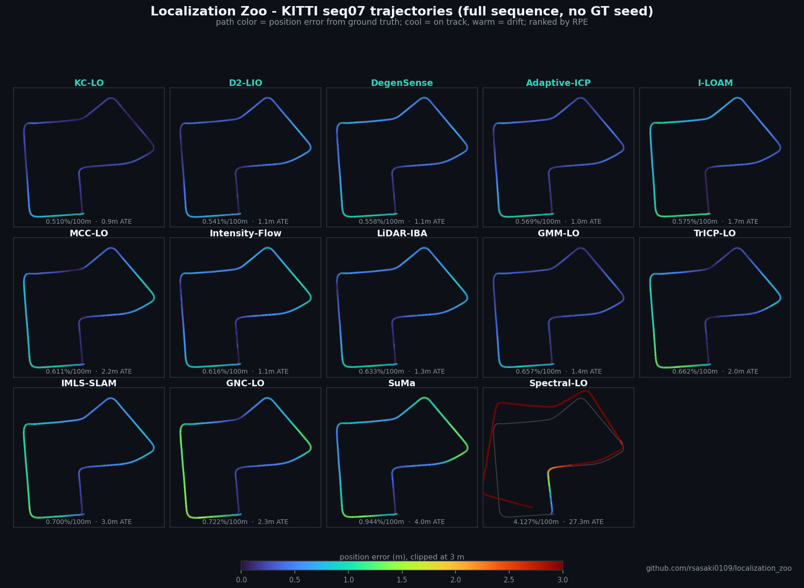

Localization Zoo
C++ implementations of localization papers — LiDAR, LIO, VIO and IMU — behind one API, with honest KITTI benchmarks.

Try it
One command, no build or dataset. It writes report.html and manifest.json to ./zoo-demo/.
docker run --rm -v "$PWD/zoo-demo:/out" ghcr.io/rsasaki0109/localization_zoo:latest
Native build: clone the repo and run bash evaluation/scripts/demo_localization_zoo.sh.
KITTI leaderboard
Full sequences, odometry only. RPE drift in % per 100 m (lower is better); ATE in grey.
| Method | Seq 00 | Seq 02 | Seq 05 | Seq 07 | Seq 08 |
|---|---|---|---|---|---|
| LF-GICP | 0.82% 9 m | 0.89% 33 m | 0.51% 6 m | 0.54% 1 m | 1.35% 16 m |
| LeGO-LOAM | 0.84% 13 m | 0.88% 42 m | 0.56% 6 m | 0.53% 3 m | 1.38% 18 m |
| A-LOAM | 0.89% 12 m | 0.92% 50 m | 0.53% 5 m | 0.61% 3 m | 1.39% 18 m |
| F-LOAM | 0.92% 10 m | 0.94% 52 m | 0.54% 6 m | 0.61% 3 m | 1.40% 20 m |
| KISS-ICP | 0.94% 15 m | 1.09% 56 m | 0.71% 7 m | 0.66% 2 m | 1.36% 17 m |
| SuMa | 1.25% 19 m | 1.28% 52 m | 0.99% 10 m | 0.94% 4 m | 1.91% 19 m |
| CT-ICP | 2.01% 17 m | 2.65% 76 m | 1.12% 12 m | 1.14% 3 m | 1.93% 99 m |
| L-LO | 1.54% 16 m | 3.97% 142 m | 1.59% 15 m | 1.17% 3 m | 2.05% 36 m |
| MULLS | 2.54% 49 m | 2.27% 261 m | 1.73% 20 m | 2.64% 8 m | 3.12% 81 m |
Methods that need a ground-truth pose as their initial guess are not ranked. More tables and the official KITTI metric are in the README.